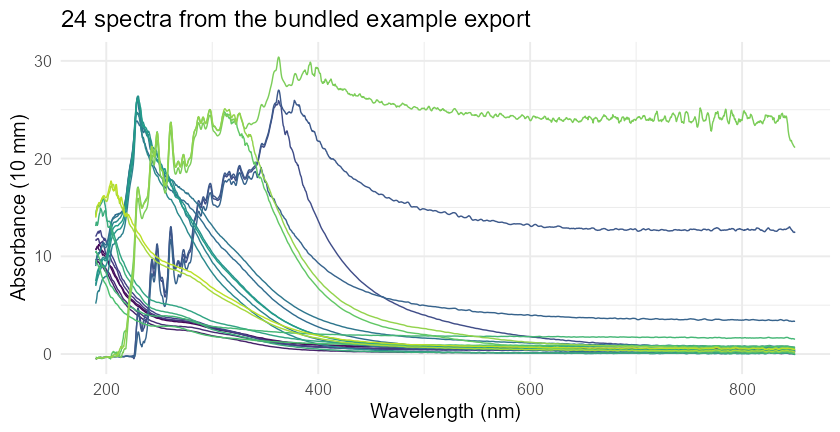

nanodRop reads the UV-Vis spectral exports from a NanoDrop One spectrophotometer into R.
The instrument’s .tsv export stacks every measurement in one file. Each block has the sample name, a timestamp and some calibration lines before the actual wavelength/absorbance pairs, so it can’t be read directly with read.delim(). read_nanodrop() turns the file into a long table with one row per measurement and wavelength, ready for dplyr or ggplot2.
Usage
library(nanodRop)
spectra <- read_nanodrop("UV-Vis 5_14_2024.tsv")
head(spectra, 3)
#> samps waves abs measurement timestamp
#> <char> <num> <num> <int> <char>
#> 1: 6 1 190.0 10.666 1 5/14/2024 5:04 PM
#> 2: 6 1 190.5 10.782 1 5/14/2024 5:04 PM
#> 3: 6 1 191.0 10.853 1 5/14/2024 5:04 PMEach measurement block in the file gets its own measurement number, so measuring a sample twice under the same name gives two separate spectra.
Read a whole folder of exports at once. This adds a file column:
spectra <- read_nanodrop_dir("nanodrop_exports/")Compare absorbance at wavelength pairs, as differences or ratios:
parse_waves(spectra, wave_pairs = list(c(260, 280)), type = "ratio")
#> # A tibble: 24 × 5
#> samps measurement abs_260 abs_280 ratio_260_280
#> <chr> <int> <dbl> <dbl> <dbl>
#> 1 6 1 1 3.39 3.13 1.08
#> 2 6 2 2 3.49 3.24 1.08
#> 3 7 1 3 2.54 2.37 1.08
#> # ...
Functions
| Function | What it does |
|---|---|
read_nanodrop() |
Read one export. Optional wavelength bounds, and optional handling of re-measured samples marked by a name suffix (remeasure_suffix). |
read_nanodrop_dir() |
Read every export in a folder and stack them. |
parse_waves() |
Absorbance at chosen wavelengths per measurement, plus pairwise differences or ratios. |
The package includes an example export (system.file("extdata", "nanodrop_example.tsv", package = "nanodRop")) and two example datasets, ds and ds1.
Scope
This package reads the UV-Vis spectral export from the NanoDrop One. It has not been tested with other NanoDrop models or with the nucleic acid and protein report exports. If you have one of those files and it doesn’t parse, please open an issue with a sample file.
Citation
citation("nanodRop")